Oil Capital of the World
Tulsa architecture
For most of the 20th century Tulsa was known as the Oil Capital of the World, and oil money paid for a wave of Art Deco towers and churches that still define downtown. Early in the century the Greenwood district was also home to Black Wall Street, one of the most prosperous Black communities in the United States.
- 15Landmarks
- 1918Oldest · Mid-Continent Tower
- 203 mTallest · BOK Tower
- 15Architects
Map and Look Around
Tap a numbered pin to see that landmark from the street with Apple Look Around.
Eat and stay near
Restaurants
Hotels
From Apple Maps. Walking times are estimates from straight-line distance.
Before you go
- Fly intoTulsa International Airport (TUL)
Tulsa International lies about 8 km northeast of downtown and first opened in 1928, after local businessmen raised money to buy land for a municipal airfield. The city bought it in 1929, it took its current name in 1963, and today it is the global maintenance base for American Airlines.
- CurrencyUS Dollar ($)
- LanguageEnglish
English is spoken with a relaxed Oklahoma accent. The city's name comes from Tallasi, a word in the Muscogee language, and most of Tulsa still lies within the Muscogee (Creek) Nation, with parts in the Osage and Cherokee Nations.
- Getting aroundMetroLink Tulsa buses
MetroLink Tulsa, called Tulsa Transit until 2024, runs 18 bus routes from hubs in downtown and Midtown. Its first bus rapid transit line, the Aero, opened in 2019 along Peoria Avenue, and a second rapid line named after Route 66 is planned along East 11th Street.
- Where to stayFind hotels in Tulsa on Expedia Compare on Booking.com Vacation rentals on Vrbo
Stamped! may earn a commission when you book through these links.
- Tours and ticketsFind tours in Tulsa on GetYourGuide More tours on Viator
Skip-the-line tickets and guided tours of the landmarks. Stamped! may earn a commission.
15 landmarks in Tulsa
-
Photo: David Brossard, CC BY-SA 2.0, via Wikimedia Commons Boston Avenue Methodist Church
1301 S Boston Ave, Tulsa, OK
Completed in 1929 at a cost of $1.25 million, this church shows how Art Deco could be used for a place of worship. Art teacher Adah Robinson sketched the first ideas, and her former student Bruce Goff, then working at Rush, Endacott and Rush, developed the design, though who deserves more credit is still debated. A 225-foot tower rises above a semicircular auditorium, its tops crowned with stylized praying hands, and terra cotta figures by sculptor Robert Garrison decorate the walls.
- Built
- 1929
- Architect
- Bruce Goff (Rush, Endacott and Rush); Adah Robinson
- Style
- Art Deco
- Height
- 68 m (225 ft)
- Today
- Church
-
Photo: Jordan MacDonald from Broken Arrow, Oklahoma, U.S.A., CC BY 2.0, via Wikimedia Commons Philcade Building
511 S Boston Ave, Tulsa, OK
Oilman Waite Phillips commissioned this office building from architect Leon B. Senter, and during design it grew from six to nine and finally 13 stories before it was completed in 1931. It is admired for its Art Deco zigzag ornament, with terra cotta on the lower floors decorated with stylized plants and animals. Phillips planned it to complement his Philtower across 5th Street, and in 1937 he added a penthouse on top as a private home for himself and his wife.
- Built
- 1931
- Architect
- Leon B. Senter
- Style
- Art Deco
- Height
- 51 m (167 ft)
- Stories
- 13
- Today
- Office building
-
Photo: Landry76, CC BY-SA 4.0, via Wikimedia Commons Philbrook Museum of Art
2727 S Rockford Rd, Tulsa, OK
This museum fills Villa Philbrook, the 72-room mansion that Kansas City architect Edward Buehler Delk designed for oil pioneer Waite Phillips and his wife Genevieve, completed in 1927. The three-story house has travertine and marble fireplaces, floors of teak, walnut and oak, and ornate ceilings in the manner of Italian villas. In 1938 the Phillips family gave it to the city, and it opened as a museum on October 25, 1939. Its formal gardens, first laid out by Hare & Hare, were inspired by Villa Lante near Rome.
- Built
- 1927
- Architect
- Edward Buehler Delk
- Style
- Italian villa
- Stories
- 3
- Today
- Museum
-
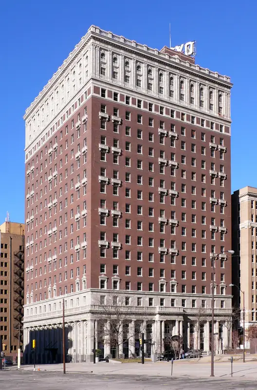
Photo: Camerafiend at English Wikipedia, CC BY-SA 3.0, via Wikimedia Commons Mayo Hotel
115 W 5th St, Tulsa, OK
Designed by George Winkler for brothers John D. and Cass A. Mayo, the 600-room Mayo opened in 1925 as the tallest building in Oklahoma. Two-story Doric columns support fourteen floors of terra cotta balconies beneath a two-story stone crown. Ceiling fans and Tulsa's first running ice water made it a summer refuge, and guests included John F. Kennedy, Charlie Chaplin, Babe Ruth and Mae West. After standing empty from 1981, it was restored and reopened as a hotel in 2009.
- Built
- 1925
- Architect
- George Winkler
- Style
- Chicago school
- Today
- Hotel
-
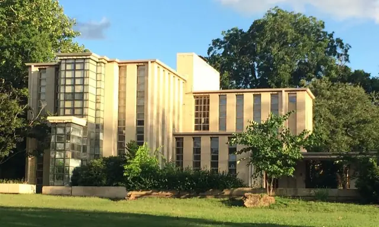
Photo: Binksternet, CC BY-SA 4.0, via Wikimedia Commons Westhope
3704 S Birmingham Ave, Tulsa, OK
Frank Lloyd Wright designed Westhope for his cousin Richard Lloyd Jones, publisher of the Tulsa Tribune, and it was completed in 1931 for $100,000, well over budget. It is one of his textile-block houses: plain concrete-block piers alternate with tall glass bays that hold 5,200 panes and cover almost half the exterior. One of the largest houses Wright ever designed, it spreads its rooms across two stories on a 5-foot grid. Some critics at the time compared it to a glass house or a penitentiary. It is a private home.
- Built
- 1931
- Architect
- Frank Lloyd Wright
- Style
- Textile Block
- Stories
- 2
- Today
- Residence
-
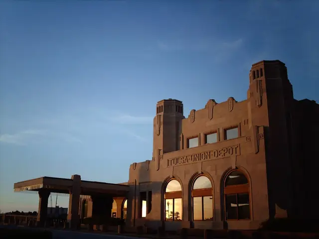
Photo: Smschrag, CC BY-SA 3.0, via Wikimedia Commons Tulsa Union Depot
5 S Boston Ave, Tulsa, OK
Opened on May 13, 1931, the Union Depot brought the Frisco, Katy and Santa Fe railroads together in one station for the first time, and more than 60,000 people turned out for the opening. St. Louis architect R.C. Stephens designed it in the Art Deco style, with chevrons, winged wheels and sunbursts. At its peak it handled 36 trains a day, but the last passenger train left in 1967. Restored after the Williams Companies bought it in 1980, it now houses the Oklahoma Jazz Hall of Fame.
- Built
- 1931
- Architect
- R.C. Stephens
- Style
- Art Deco
- Today
- Museum and offices
-
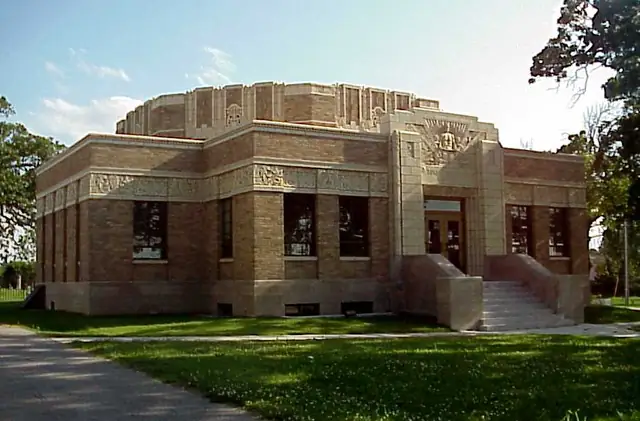
Photo: David Stapleton (Dsmdgold), CC BY-SA 3.0, via Wikimedia Commons Tulsa Fire Alarm Building
1010 E 8th St, Tulsa, OK
Built in 1931 as the nerve center of the Tulsa Fire Department, this small Art Deco building received signals from alarm boxes across the city and alerted the nearest fire station. Architect Frederick V. Kershner of Smith & Senter drew on Mayan temple design, and its terra cotta friezes are full of fire motifs, including double-headed dragons and a figure holding Gamewell alarm tape between two helmeted firefighters. After years of vacancy and flood damage, the American Lung Association rebuilt it as a showcase for healthy indoor air.
- Built
- 1931
- Architect
- Frederick V. Kershner (Smith & Senter)
- Style
- Art Deco
- Today
- Offices
-
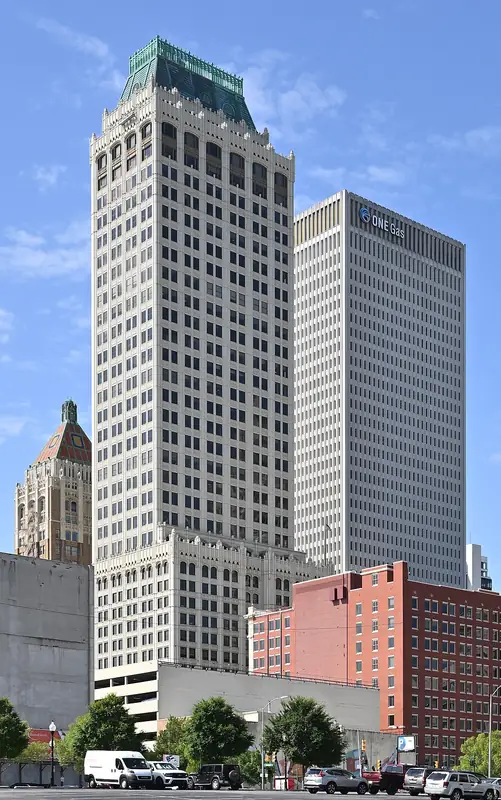
Photo: G. Edward Johnson, CC BY 4.0, via Wikimedia Commons Mid-Continent Tower
401 S Boston Ave, Tulsa, OK
This tower began in 1918 as the 16-story Cosden Building, designed by Kansas City architect Henry F. Hoit for oil baron Joshua Cosden on the site of Tulsa's first schoolhouse. In 1984 a 20-story addition was cantilevered over the original, matched so carefully in white terra cotta that the two read as a single building. Crowned with a copper roof and rising 156 meters over 36 stories, it is built in a modern version of the Gothic style rather than Art Deco.
- Built
- 1918
- Architect
- Henry F. Hoit (Cosden Building)
- Style
- Neo-Gothic
- Height
- 156 m (513 ft)
- Stories
- 36
- Today
- Office building
-
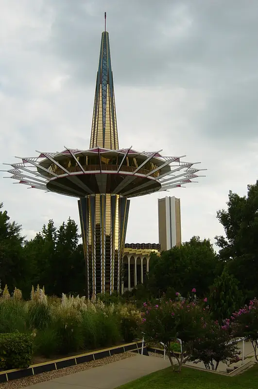
Photo: Photo by and ©2004 Dustin M. Ramsey (Kralizec!), CC BY-SA 2.5, via Wikimedia Commons Prayer Tower
Oral Roberts University, Tulsa, OK
Rising 200 feet at the center of the Oral Roberts University campus, this glass and steel tower by Tulsa architect Frank Wallace opened in 1967 and shows the influence of Googie design. Its disc-and-spindle shape is full of Christian symbolism: from the side it reads as a cross and from the air as a Star of David, while the red latticework around the observation deck stands for the crown of thorns. An eternal flame burns at the top, and the enclosed deck offers 360-degree views.
- Built
- 1967
- Architect
- Frank Wallace
- Style
- Googie
- Height
- 61 m (200 ft)
- Today
- Prayer tower and observation deck
-
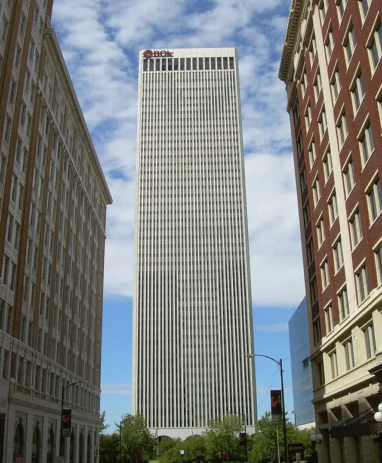
Photo: Caleb Long, CC BY-SA 2.5, via Wikimedia Commons BOK Tower
1 E 2nd St, Tulsa, OK
When it was completed in 1976, this 52-story, 667-foot tower was the tallest building in Oklahoma, a title it held until 2011. Williams Companies CEO John Williams hired Minoru Yamasaki, architect of New York's World Trade Center, and the slim tower closely follows the design of the Twin Towers, down to its marble lobby. Yamasaki first proposed two 30-story towers, but Williams wanted something more dramatic, so the plan became one tower twice as tall.
- Built
- 1976
- Architect
- Minoru Yamasaki & Associates
- Style
- International Style
- Height
- 203 m (667 ft)
- Stories
- 52
- Today
- Office building
-
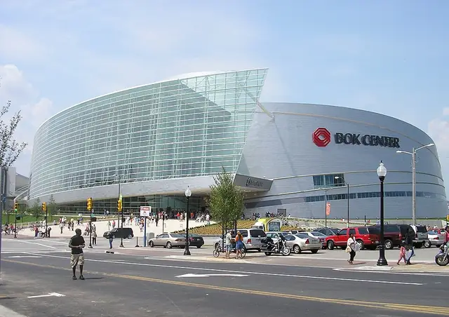
Photo: Okiefromokla, Public domain, via Wikimedia Commons BOK Center
200 S Denver Ave, Tulsa, OK
César Pelli, architect of Malaysia's Petronas Towers, was asked to give Tulsa an architectural icon, and this 19,199-seat arena opened on August 30, 2008. He blended Native American, Art Deco and contemporary themes into swirling forms: a 600-foot-long glass facade of 1,600 panels leans at five degrees and spirals upward, wrapped by 33,000 stainless steel panels. Reaching 134 feet at its highest point, it is the flagship project of Tulsa County's Vision 2025 program.
- Built
- 2008
- Architect
- Pelli Clarke Pelli; Matrix Architects
- Style
- Contemporary
- Height
- 41 m (134 ft)
- Today
- Arena
-
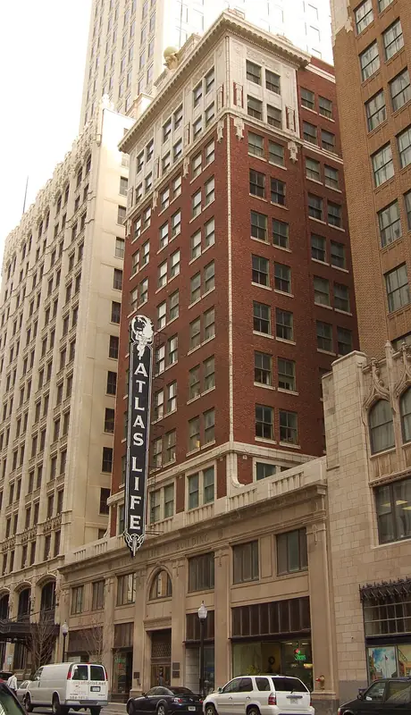
Photo: David Stapleton (Dsmdgold), CC BY-SA 3.0, via Wikimedia Commons Atlas Life Building
415 S Boston Ave, Tulsa, OK
Designed by Rush, Endacott and Rush and opened with an elaborate ceremony on November 22, 1922, this twelve-story tower was built for the Atlas Life Insurance Company, founded in Tulsa only four years earlier. Red brick walls with white marble trim rise to an ornate cornice topped by a crouching statue of Atlas carrying the world. A four-story neon sign added in 1946 makes it a local favorite. Squeezed between the Philtower and the Mid-Continent Tower, it became a Courtyard by Marriott hotel in 2010.
- Built
- 1922
- Architect
- Rush, Endacott and Rush
- Stories
- 12
- Today
- Hotel
-
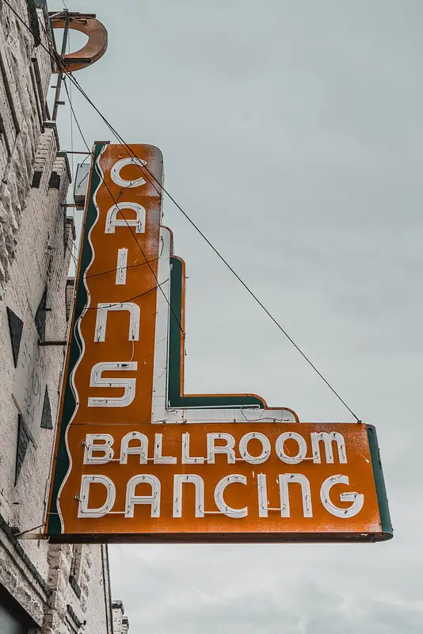
Photo: Jordan Michael Winn, CC0, via Wikimedia Commons Cain's Ballroom
423 N Main St, Tulsa, OK
Built in 1924 by W. Tate Brady as a garage, this building became Cain's Dance Academy in 1930, offering dance lessons for a dime. From 1935 Bob Wills broadcast almost daily from here on KVOO radio and made Western swing popular on its stage, and a banner still calls it the 'Home of Bob Wills'. Even in a segregated city it booked Black artists such as Count Basie. After decades of ups and downs it remains a working music venue, owned by the Rodgers family since 2002.
- Built
- 1924
- Today
- Music venue
-
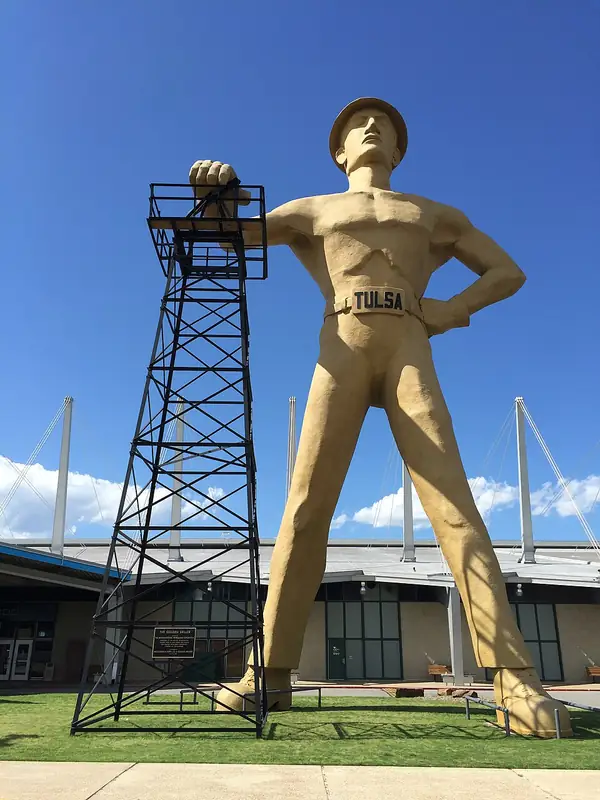
Photo: Timdayf5, CC BY-SA 4.0, via Wikimedia Commons Golden Driller
Expo Square, E 21st St, Tulsa, OK
This 76-foot (23 m) statue of an oil worker has stood in front of the Tulsa Expo Center since 1966. It is a steel frame covered in concrete and plaster and weighs 43,500 pounds. An earlier version first appeared in 1952 at the International Petroleum Exposition, and the Mid-Continent Supply Company later donated it to the fairgrounds. Its right hand rests on a real oil derrick moved from a depleted field in Seminole, and in 1979 Oklahoma named it the official state monument.
- Built
- 1966
- Height
- 23 m (75 ft)
- Today
- Statue
-
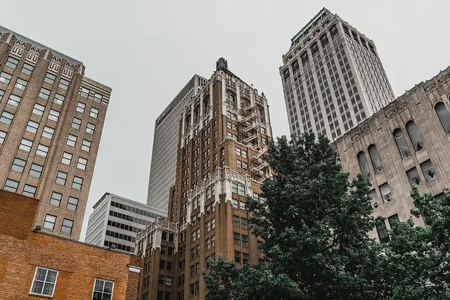
Photo: Jordan Michael Winn, CC0, via Wikimedia Commons Philtower Building
427 S Boston Ave, Tulsa, OK
Completed in 1928 for oilman and philanthropist Waite Phillips, this 24-story tower by Edward Buehler Delk mixes Gothic Revival and Art Deco and is crowned by an illuminated, sloping tiled roof. Its vaulted lobby ceiling is made of large carved stone rosettes, created in Italy and reassembled in Tulsa by the same craftsmen. Phillips gave the building to the Boy Scouts of America in 1941 to help support his Philmont Ranch gift, and his 21st-floor office is preserved. In 2004 floors 12 to 20 became loft apartments.
- Built
- 1928
- Architect
- Edward Buehler Delk; Keene & Simpson
- Style
- Gothic Revival
- Height
- 98 m (323 ft)
- Stories
- 24
- Today
- Offices and apartments


The app's quiz · 10 questions
How well do you know Tulsa?
The same quiz as in Stamped!: name the landmark, its architect, its style or the year it was finished. Every round is different.
Know Tulsa well?
Locals know their city best. Suggest a landmark we're missing, a fix to one we have, or share your own photo of one. Every suggestion is checked before it goes into the app.
More cities in North America
- Asheville
- Atlanta
- Austin
- Baltimore
- Boston
- Buffalo
- Charleston
- Chicago
- Cleveland
- Columbus, Indiana
- Cupertino
- Dallas
- Denver
- Detroit
- Fort Worth
- Guadalajara
- Havana
- Honolulu
- Houston
- Kansas City
- Las Vegas
- Los Angeles
- Mexico City
- Miami
- Milwaukee
- Minnesota
- Montreal
- Nashville
- New Orleans
- New York
- Oak Park
- Orlando
- Palm Springs
- Philadelphia
- Phoenix
- Pittsburgh
- Portland
- Quebec City
- San Diego
- San Francisco
- Savannah
- Seattle
- St. Louis
- Toronto
- Vancouver
- Victoria
- Washington D.C.
Stamp all 15 in Stamped!
Fly through Tulsa in photoreal 3D, take its 10-question quiz, plan your days and earn a passport stamp at every landmark. Free on iPhone, iPad, Mac and Apple Vision Pro.
Download on theApp StoreEnjoying the guides? Leave a tip to help keep new cities coming.